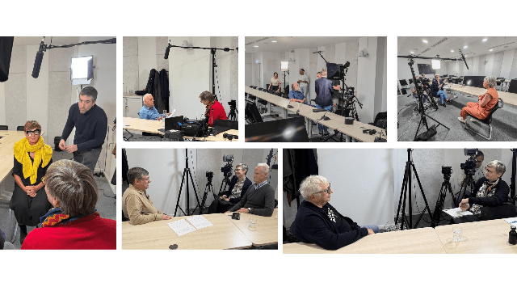

Audiovisuel · Patrimonial
La mémoire d’une institution.
Une série d’entretiens filmés, du cadrage éditorial à la livraison.

Projet d’archives orales Inria.
01
Le contexte
Co-pilotage d'une série d'entretiens filmés retraçant l'histoire d'INRIA à travers ses figures emblématiques, en coordination avec un prestataire externe et plusieurs directions internes.
02
Ma contribution
- Définition de la stratégie éditoriale et du fil narratif de la série
- Coordination des plannings entre interviewés, directions et équipes techniques
- Pilotage du prestataire audiovisuel externe et suivi des livrables
03
Le résultat
Une série patrimoniale pérenne, livrée dans les délais, intégrée aux archives institutionnelles d’INRIA.
Mission livrée